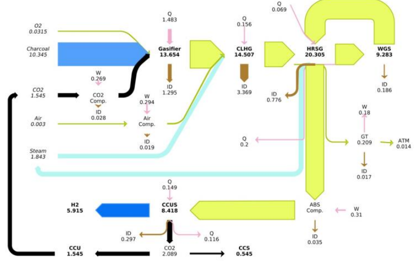

Congratulations to Chigozie on his new publication
Two-stage interpretable framework for sustainable hydrochar-derived carbon electrodes in supercapacitors
Journal of Energy Storage, 2027 · Published online November 2026
Unlocking the full potential of biomass and waste.
Bioenergy · Hydrogen · Sustainable Fuels · Carbon Materials · Resource Valorisation
Our question
We develop sustainable bioenergy and resource-recovery technologies, combining experiments, computational modelling and process assessment.
From understanding multiphase reactions to evaluating whole processes, our work supports the development and scale-up of sustainable technologies.

Two-stage interpretable framework for sustainable hydrochar-derived carbon electrodes in supercapacitors
Journal of Energy Storage, 2027 · Published online November 2026

Robbie, Jun, Lewis, and Aslan at the Supergen Bioenergy Hub Annual Assembly in Liverpool, 9–10 November 2026.

Charcoal gasification process for boosting chemical looping hydrogen generation and CO₂ removal
Abbood, A. A. & Li, J.
34th European Biomass Conference and Exhibition Proceedings, 2026, pp. 591–598.

Jun joins the Royal Society of Edinburgh’s inaugural Research Leadership Scheme, themed Building Scotland’s Green Future.
Read the RSE announcement